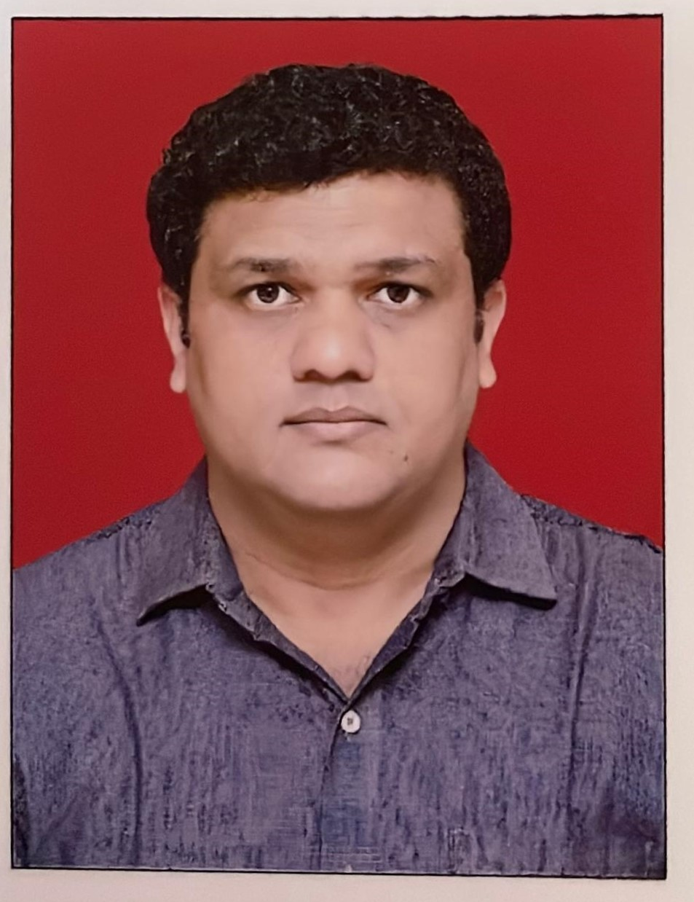

Suraj Dhekale

Summery
Looking forward for an opportunity in an environment,
where I can utilize my skills in contributing effectively towards
the success of the organization without neglecting the improvement of my personal and professional skills.
Profile Summery
- Overall 10+ Years of experience in IT, Banking,Insurance and Networking Domain with ability in acquiring new skills, effective communication, problem solving.
- Provide support to multiple applications like finnone, Salesforce, ArcGIS etc
- Analyze production support reports (outages, scheduled downtime, bugs etc.) to determine causes of nonconformity with product specifications and/or operating production problems.
- Implementation and site readiness, UAT and Production roll out. UAT change release and its bug fixes. User training and application support.
- Manages timely processing of daily batch jobs running on multiple scheduling systems.
- Performing health check activities including monitoring schedule jobs.
- Writing SQL/ Pl SQL queries on Oracle environment to generates reports to make the business process smooth.
- Support End of Day Activities (EOD) and Month end activities (EOM)
- Requirement gathering for business process change request.
- Extensive Knowledge and experience in maintaining database, producing reports, data retrieval and data updates in SQL database.
Currents working project:
Organization : SBI LIFE
Designation : Manager Production Support
Duration : 14 June 2023 to still
- Resolving end user technical issues in Indigo/Ingenium Insurance application.
- Analyze production support reports (outages, scheduled downtime, bugs etc.) to determine causes of nonconformity with product specifications and/or operating production problems.
- Experience in creating patches of creating tables, views, inserting new value in table, updating table using Oracle PLSQL environment.
- Experience in design or create schedule jobs on sql server.
- Implementation and site readiness, UAT and Production roll out. UAT change release and its bug fixes. User training and application support.
- Delivering the inputs to development team to understand the requirements on reports.
- Performing health check activities including monitoring schedule jobs.
- Writing SQL queries, joins On Oracle Pl SQL environment to generates reports to make the business process smooth.
- Prioritization and assignment of all incidences, service request, changes and problems assigned to team’s service now queue.
- Maintaining awareness of all critical incidents and manages the team resources effectively.
- Day to day operations support, leading infrastructure maintenance and patch upgrade, assisting Service now ticket. Follow up on bugs and vendor to provide quick release.
- Actively participates with other members of the delivery team (Product manager, TPM, BA’s, Dev and QA Analysts) to create solutions that meet business needs in an Agile setting.
- Experience in Sanity Activity for scheduled jobs on production.
- Perform root cause analysis on failure and resolving performance tuning related issues.
Previous working project:
Organization : IDFC Bank
Designation : Manager Production Support
Duration : 3 Oct. 2022 to 14 June 2023
- Resolving end user technical issues in Finnone.
- Analyze production support reports (outages, scheduled downtime, bugs etc.) to determine causes of nonconformity with product specifications and/or operating production problems.
- Experience in creating patches of creating tables, views, inserting new value in table, updating table using Oracle PLSQL environment.
- Experience in design or create schedule jobs on sql server.
- Implementation and site readiness, UAT and Production roll out. UAT change release and its bug fixes. User training and application support.
Previous working project:
Organization : Tata Consultancy Services
Designation : Senior Associate
Duration : 5 Sep. 2018 to 29 Sep. 2022
- Providing support to NBN client applications and database as per business requirement.
- Performing routine health check and application at regular interval.
- Working on failed job promptly and checking file status on server and coordinating with concern team to resolve the issue.
- Creation of SQL queries for extraction of data reports from database.
- Performing application access related tasks as per requirement.
Skills
- Database (PL/SQL): ⭐️⭐️⭐️⭐️⭐️
- Operating Sytem (Linux) ⭐️⭐️⭐️
- Front-End (HTMAL,CSS,JAVASCRIPT): ⭐️⭐️⭐️
Academia
- B.E. Graduated from M.G.M. MUMBAI 60% in 2012
- HSC from Mahatma Education Society Maharashtra Board 72.17% in 2008.
- SSC from Sudhagad Education Society Maharashtra Board 86.13% in 2006.
Others